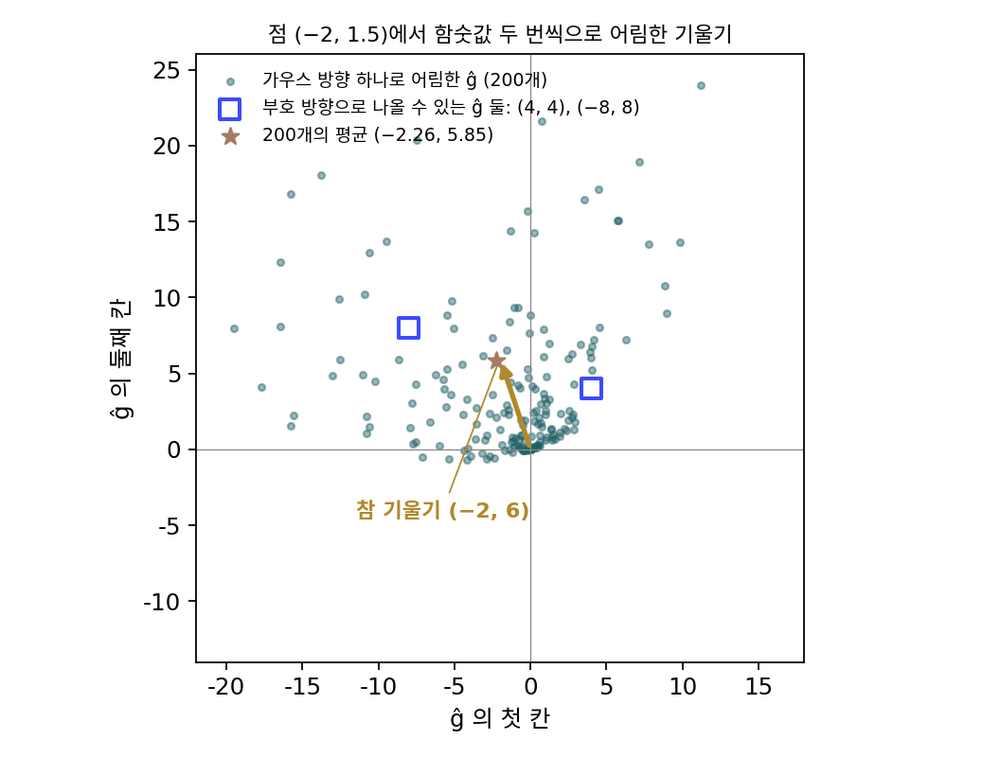

동시 섭동: 무작위 방향 하나로 그래디언트 어림하기
무작위 탐색은 「낮아졌나」만 보았고, 시험한 점이 얼마나 낮아졌는지, 높아졌다면 얼마나 높아졌는지는 버렸다. 그 바람에 변수가 많으면 낮아진 스텝도 거의 옆으로 걸은 것이 되어, 함숫값 계산 횟수가 변수 수에 비례해 늘었다(안개 속 비탈에서 차원을 늘려 본 계산). 유한 차분은 값의 크기를 다 쓰지만 변수마다 한 번씩 흔들어야 했으니, 변수가 백만 개면 둘 다 너무 비싸다. 무작위로 고른 방향 하나로 두 번만 재고, 그 두 값의 차이까지 써서 그래디언트를 어림할 수는 없을까?
역사: 스폴이 변수를 모두 한꺼번에 흔들다
존스 홉킨스 대학교 응용물리연구소(APL)의 제임스 스폴(James C. Spall)은 노이즈 섞인 측정만 얻을 수 있는 큰 시스템을 다루었다. 키퍼–울포위츠 방법을 변수가 p 개인 문제에 그대로 쓰면, 변수마다 앞뒤로 한 번씩 흔드느라 그래디언트 하나에 측정이 2p 번 든다. 측정 하나가 실험 한 번이거나 긴 시뮬레이션 한 번이면 p 가 수십만 넘어도 감당하기 어렵다. 스폴은 1992년 『IEEE 자동 제어 회보(IEEE Transactions on Automatic Control)』에 논문 한 편을 실었다. 제목은 「동시 섭동 그래디언트 어림을 쓴 다변수 확률 근사(Multivariate Stochastic Approximation Using a Simultaneous Perturbation Gradient Approximation)」이다. 그는 이 논문에서 모든 변수를 무작위 부호로 한꺼번에 흔들자고 했고, 그러면 변수가 몇 개든 측정은 두 번이다. 그는 동시 섭동의 그래디언트 어림이 스텝 하나만 보면 거칠지만, 꽤 일반적인 조건에서 같은 스텝 수로 유한 차분 방법과 같은 통계적 정확도에 이른다는 것을 보였다. 스텝마다 측정이 2p 번에서 두 번으로 주니, 같은 정확도에 드는 측정은 대략 p 분의 1 이다. APL 은 이 방법이 쓰인 곳으로 교통 신호 시간 조정, 적응 광학, 항공기 모델링, 폐수 처리 같은 분야를 꼽는다.
그릇 위의 같은 점에서
스폴의 생각을 무작위 탐색 때와 같은 그릇 f(x) = ½(x₁² + 4x₂²), 같은 출발점 (−2, 1.5) 에서 재 보자. 식을 아는 그릇을 고른 것은 참 그래디언트 (−2, 6) 을 알고 있어서 어림과 바로 견줄 수 있기 때문이다. 방향 u 의 두 칸을 각각 +1 이나 −1 로 뽑고, 그 방향으로 c = 0.1 만큼 앞뒤의 함숫값을 잰다. 두 값의 차이를 2c 로 나누면 그 방향으로의 그래디언트, 곧 u 와 참 그래디언트의 내적이 나온다. 이 숫자 하나를 방향 u 에 곱한 것을 그래디언트의 어림 ĝ 으로 삼는데, 부호 방향은 네 가지뿐이니 모두 적을 수 있다.
| 방향 u | 그 방향의 그래디언트 (f(x + cu) − f(x − cu))/(2c) | 어림 ĝ |
|---|---|---|
| (+1, +1) | 4 | (4, 4) |
| (+1, −1) | −8 | (−8, 8) |
| (−1, +1) | 8 | (−8, 8) |
| (−1, −1) | −4 | (4, 4) |
어림 하나하나는 참 그래디언트 (−2, 6) 과 꽤 달라서, (4, 4) 는 첫 칸의 부호마저 틀렸다. 그런데 네 가지가 똑같이 나올 수 있으니 평균을 내면 ((4 − 8 − 8 + 4)/4, (4 + 8 + 8 + 4)/4) = (−2, 6) 이고, 참 그래디언트와 같다. 어림 ĝ 의 첫 칸은 (u₁g₁ + u₂g₂)u₁ = g₁ + u₁u₂g₂ 인데, u₁u₂ 가 +1 과 −1 로 반반 나오니 평균에서 다른 칸의 그래디언트 g₂ 가 섞인 항이 지워지기 때문이다.
이렇게 모든 변수를 무작위 방향으로 한꺼번에 살짝 흔들고(섭동), 그 방향의 앞뒤 함숫값 차이로 그래디언트를 어림하는 방법을 동시 섭동 (모든 칸을 한꺼번에 흔들어 그래디언트 어림하기 / simultaneous perturbation)이라 한다. 동시 섭동 어림을 쓰는 확률적 최적화 방법 전체를 스폴의 이름대로 SPSA(simultaneous perturbation stochastic approximation, 동시 섭동 확률 근사)라 부른다. 스폴은 방향을 Δ 로 적었지만 이 책에서는 Δ 를 업데이트 방향에 쓰므로 u 로 적는다.
평균이 맞는 대신 값을 치른다. 셋째 식은 어림이 참 그래디언트에서 벗어난 크기의 제곱이 평균해서 참 그래디언트 크기의 제곱의 d − 1 배라는 뜻이다. 칸이 d 개면 다른 칸에서 섞여 드는 항이 d − 1 개이고, 하나하나는 평균에서 지워지지만 한 번의 어림에서는 모두 노이즈로 남는다. 위의 2차원 그릇에서는 d − 1 = 1 이라 노이즈가 참 그래디언트만 한 크기다. 칸을 표준정규 분포로 뽑는 가우스 방향을 써도 평균은 맞고, 노이즈의 제곱은 d + 1 배로 조금 더 크다. 같은 점에서 가우스 방향으로 20만 번 어림해 보면 평균이 (−1.996, 6.004) 이고 노이즈의 제곱의 평균은 참 그래디언트 제곱의 3.008 배다.

차원이 커지면 노이즈는 √d 배로 커져서, d = 1000 이면 한 번의 어림이 참 그래디언트보다 서른 배쯤 크게 흔들린다. 방향 m 개로 어림해 평균하면 노이즈가 √m 분의 1 로 줄지만, d = 100 에서 노이즈를 참 그래디언트 크기쯤으로 줄이려면 m = 100, 곧 함숫값 200번이 들어 가운데 유한 차분과 같아진다. 그래서 동시 섭동의 이점은 그래디언트 하나를 정확히 구하는 데 있지 않다. 거친 어림으로 작은 스텝을 많이 걷고, 스텝이 쌓이는 동안 노이즈가 서로 지워지게 하는 데 있다. 미니배치로 어림한 그래디언트로 걷는 확률적 경사하강과 같은 생각이다.
ML에서: 앞먹임만으로 큰 언어 모델 다듬기
역전파는 그래디언트를 정확히 주지만 메모리를 많이 쓴다. 앞으로 계산하는 동안 층마다의 중간값을 모두 저장해 두어야 거꾸로 계산할 수 있고, Adam 같은 옵티마이저는 파라미터마다 값을 두 개씩 더 들고 있다. 사디카 말라디(Sadhika Malladi)와 동료들은 2023년 NeurIPS 논문 「앞먹임만으로 언어 모델 파인튜닝하기(Fine-Tuning Language Models with Just Forward Passes)」에서 이 메모리 부담을 동시 섭동으로 덜었다. 그들의 MeZO 는 스폴의 SPSA 를 정의로 들여와, 파라미터 전체를 가우스 방향으로 앞뒤로 흔들어 손실을 두 번 계산하고, 두 손실의 차이로 파라미터를 메모리 안에서 바로 고친다. 메모리는 추론(앞먹임만 하는 계산)과 같은 만큼만 든다. 논문은 80GB 메모리 GPU 한 장에서 역전파 파인튜닝으로는 파라미터 27억 개짜리 모델까지만 다룰 수 있는데 MeZO 로는 300억 개짜리 모델을 학습할 수 있다고 보고했고, 660억 개짜리 모델까지 실험해 여러 태스크에서 역전파 파인튜닝과 비슷한 성능을 냈다. 파라미터가 수십억 개인데 노이즈가 √d 배라는 계산과 어떻게 맞는지는 아래 문제 9의 실험이 실마리를 준다.
문제 7. 양념 셋을 한꺼번에
찌개에 소금, 설탕, 식초를 한 숟갈씩 더할 때 맛 점수가 각각 +0.3, −0.1, +0.2 만큼 바뀐다고 하자(요리사는 이 값을 모른다). 요리사는 세 양념을 한꺼번에 ±1 숟갈씩 바꾼 찌개 두 냄비(한 냄비는 부호대로, 다른 냄비는 부호를 뒤집어)를 맛보고, 두 점수의 차이를 2로 나눈 값을 부호에 곱해 각 양념의 효과로 어림한다. (가) 부호가 (+, −, +) 이면 어림은? (나) (+, +, −) 이면? (다) 부호 여덟 가지를 모두 해 보고 평균하면?

(가)는 부호대로 넣은 냄비가 0.3 + 0.1 + 0.2 = 0.6 오르고, 뒤집은 냄비는 0.6 내려가니까 차이가 1.2, 2로 나누면 0.6 이에요. 부호를 곱하면 (0.6, −0.6, 0.6). 소금이랑 식초가 똑같이 0.6 씩 맛을 올리네요.

참값은 소금 0.3, 식초 0.2 였어요. 0.6 은 어디서 왔을까요?

세 양념 효과를 다 더한 거예요. 소금 칸에 설탕이랑 식초 효과까지 들어갔어요. (나)는 0.3 − 0.1 − 0.2 = 0 이라 어림이 (0, 0, 0) 이고요. 소금이 아무 효과 없다고 나오네요.

여덟 가지를 다 하면 소금 칸은 0.4, 0, 0.6, 0.2, 0.2, 0.6, 0, 0.4 이고 평균이 0.3 이야. 셋 다 (0.3, −0.1, 0.2) 로 정확히 돌아와.

하나하나는 틀리는데 평균은 왜 맞을까요?
소금 칸에 섞인 설탕 효과부터 볼게요. 소금 부호 × 설탕 부호 × (−0.1) 이네요.
두 부호의 곱은 여덟 가지 가운데 어떻게 나오죠?

반은 +1, 반은 −1 이라 평균하면 0 이에요. 소금 자신의 효과에는 소금 부호의 제곱이 붙으니까 늘 1 배이고요.

팀원 셋이 함께 낸 보고서 점수만 보고 각자 기여를 나누면 한 번으로는 엉터리인데, 조를 이리저리 바꿔 가며 여러 번 보면 각자의 기여가 드러나는 거랑 같네요.
문제 8. 나누는 꼴과 0 가까운 방향
스폴의 논문은 어림의 i 번째 칸을 (f(x + cu) − f(x − cu))/(2c) 를 uᵢ 로 나누어 적는다. (가) uᵢ 가 +1 이나 −1 이면 곱하는 꼴과 왜 같은가? 이때 평균은 왜 참 그래디언트가 되는가? (나) 그릇 f(x) = ½(x₁² + 4x₂²) 의 점 (−2, 1.5) 에서, uᵢ 를 [−1, 1] 에서 고르게 뽑아 나누는 꼴로 10만 번씩 어림해 평균하기를 다섯 번 하면 평균이 (0.2, 6.4), (−3.8, 3.1), (0.3, 4.3), (−35.8, 6.3), (−1.3, 4.0) 으로 나온다. 무엇이 잘못됐는가? (다) 가우스 방향으로 나누는 꼴을 쓰면 어떨까?
(가)는 쉬워요. uᵢ² = 1 이니까 1/uᵢ = uᵢ 예요. 평균은 문제 7(양념 셋)처럼 다른 칸에서 섞여 든 항이 uᵢuⱼ 의 평균 0 때문에 지워지고요.
(나)는 10만 번이나 평균했는데 다섯 번이 다 달라요. 샘플이 아직 모자란가 봐요. 100만 번 하면 맞을 거예요.
10만 개 가운데 |u₁| 가 0.001 보다 작은 방향은 몇 개쯤 될까요? 그런 방향에서 어림의 첫 칸은 얼마가 되죠?

고르게 뽑으니까 0.1%, 100개쯤이요. 실제로 세어 보면 비율이 0.0012 라 120개쯤이에요. 그런 방향에서는 방향 그래디언트를 0.001 보다 작은 수로 나누니까 첫 칸이 천 배 넘게 커져요. 그런 게 하나만 나와도 평균이 흔들려요.

1/|u₁| 의 평균을 적분해 보면 ∫₀¹ (1/u) du 라 무한대야. 평균 자체가 없으니 아무리 많이 뽑아도 수렴하지 않아. 샘플이 모자란 게 아니었어.

그래서 스폴은 방향의 칸마다 1/uᵢ 의 평균이 유한해야 한다는 조건을 붙였어요. ±1 은 그 조건을 지키는 가장 단순한 고르기예요. (다)는요?

가우스 분포도 0 근처에 확률이 있으니까… 1/|uᵢ| 의 평균이 무한대겠네요. 나누는 꼴은 안 돼요.
그럼 곱하는 꼴은?

곱하면 E[uuᵀ] = I 만으로 평균이 맞으니까 조건이 필요 없어.

MeZO 가 가우스 방향을 쓰면서 나누지 않고 곱한 게 그 때문이었네요. 조건 하나를 빼먹으면 평균이 아예 없는 어림이 된다니, 수식 하나 바꾸는 것도 조심해야겠어요.
문제 9. 손실 계산만으로 선형 회귀
입력이 d 개인 선형 회귀(표준정규 입력, 샘플 2,000개)를 손실 계산만으로 학습한다. 스텝마다 가우스 방향 하나로 동시 섭동 어림 ĝ 를 구해 w ← w − ηĝ 로 옮긴다. 그래디언트를 쓰는 경사하강은 학습률 0.5 로 d = 10, 50, 200 에서 6, 9, 14스텝 만에 손실이 최솟값 + 0.001 안에 든다. (가) 0차 방법에 같은 학습률 0.5 를 쓰면 어떻게 되는가? (나) 학습률을 얼마로 줄여야 하고, 그러면 스텝 수는 d 와 어떤 관계인가? (풀어 본 뒤 위젯 2의 「문제 9 불러오기」로 d = 50 의 노이즈를 보자.)
어림의 평균이 참 그래디언트라고 했으니까 같은 학습률로 걸으면 평균해서 경사하강이랑 같이 가겠죠. d = 50 으로 돌려 볼게요.
어… 처음 손실 27.3 이 한 스텝 만에 725, 다섯 스텝에 20만, 스무 스텝에 10¹⁸ 이에요. 터졌어요.
평균은 맞아도 한 스텝의 길이는 어떻죠? 가우스 방향이면 ĝ 의 길이의 제곱이 평균해서 참 그래디언트의 몇 배였나요?
본문의 셋째 식에서 노이즈의 제곱이 d + 1 배였으니까, 참 그래디언트의 제곱까지 더해 d + 2 배야.
d = 50 이면?
한 스텝이 평균해서 √52 ≈ 7 배 길어. 학습률 0.5 가 안전했던 그릇에서 스텝이 일곱 배면 그릇 벽을 넘어 튕겨 나가.
그럼 스텝 길이의 제곱을 경사하강과 맞추려면요?
학습률을 d + 2 로 나눠야 해요. 0.5/(d + 2) 로 돌리면 d = 10, 50, 200 에서 122, 707, 3,894스텝이에요.
경사하강은 6, 9, 14스텝이었으니까… 비가 20, 79, 278 이야.
d 가 커질수록 거의 d 에 비례해서 느려지네. 손실 계산은 스텝마다 두 번이고.
경사하강 한 스텝을 0차 방법 d 스텝쯤으로 사는 거네요. 역전파 한 번이 손실 계산 몇 번 값이면, 파라미터가 많을수록 손해가 커요. 그래도 MeZO 가 되는 건 메모리가 모자라 역전파를 아예 못 돌리는 처지라서고, 또 파인튜닝은 이미 잘 학습된 자리에서 조금만 움직이면 되는 일이라서겠네요.
그래도 그것만으로 수십억 배를 다 설명할 수 있을지는 모르겠어. 이 회귀는 모든 방향이 똑같이 휘어 있는데, 실제 신경망의 손실은 대부분의 방향에서 거의 평평하다고 하잖아. 그러면 노이즈가 섞이는 방향 대부분이 손실을 거의 안 바꿀 테니 사정이 다를 것 같아.